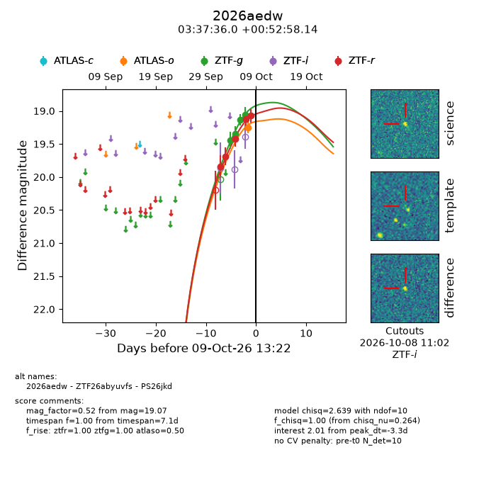
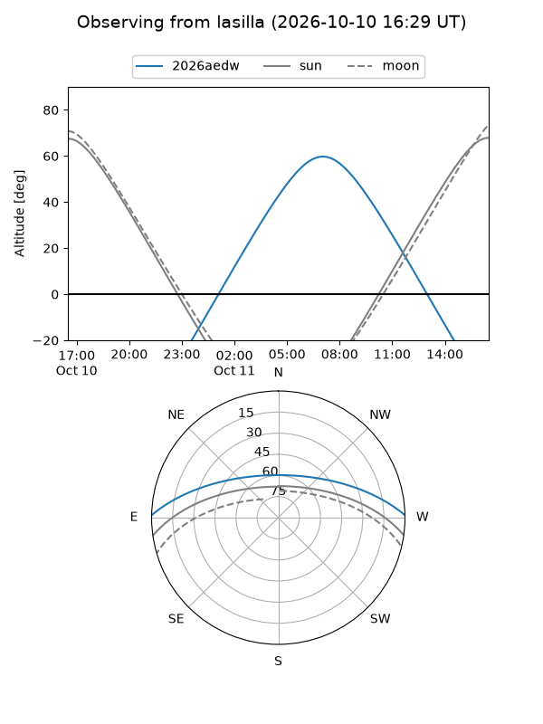
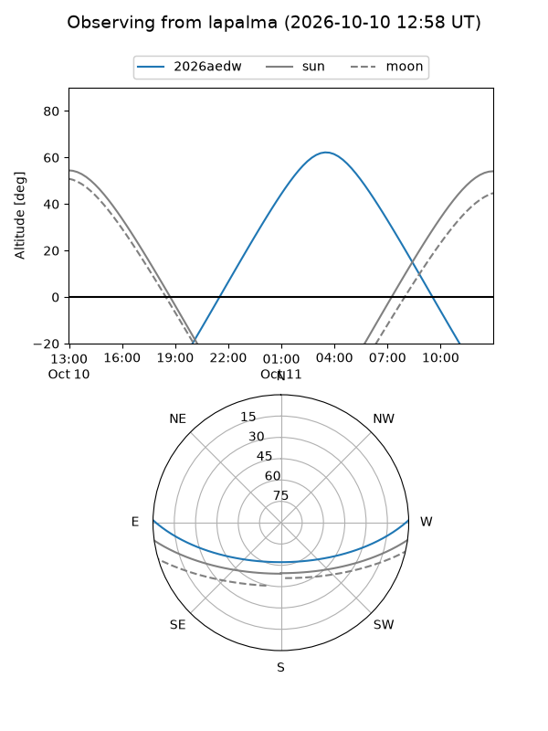
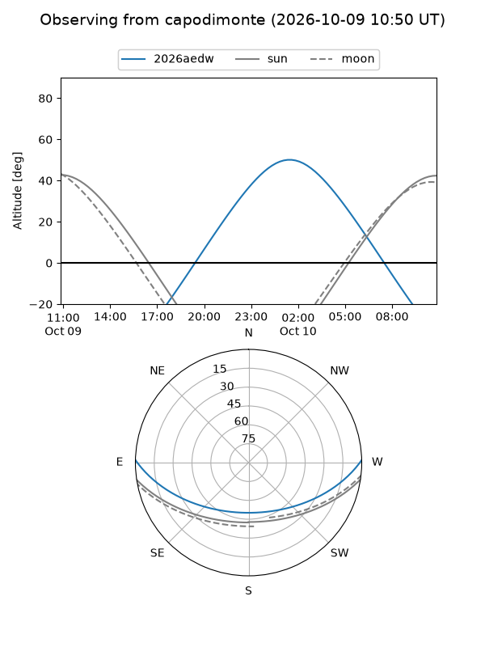
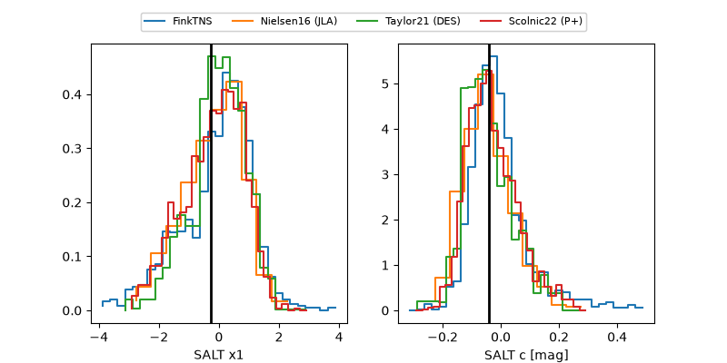

2026aedw
Target 2026aedw at 2026-10-09 13:25
Aliases and brokers:
FINK-ZTF: ztf.fink-portal.org/ZTF26abyuvfs
Lasair-ZTF: lasair-ztf.lsst.ac.uk/objects/ZTF26abyuvfs
ALeRCE-ZTF: alerce.online/object/ZTF26abyuvfs
YSE-PZ: ziggy.ucolick.org/yse/transient_detail/2026aedw
TNS name: wis-tns.org/object/2026aedw
Direct TNS query: direct search
alt names
ZTF26abyuvfs (ztf,fink_ztf)
2026aedw (tns,yse)
PS26jkd (panstarrs)
Coordinates:
equatorial (ra, dec) = 54.3998,+0.88282
equatorial (HMS+DMS) = 03:37:35.95,+00:52:58.14
galactic (l, b) = (184.7697,-41.22684)
Flags:
peak dt: -3.3
Photometry:
last atlaso=19.25, ztfg=19.06, ztfr=19.07
1 atlaso, 4 ztfg, 5 ztfr detections
Lightcurve

Visibility



Additional plots
